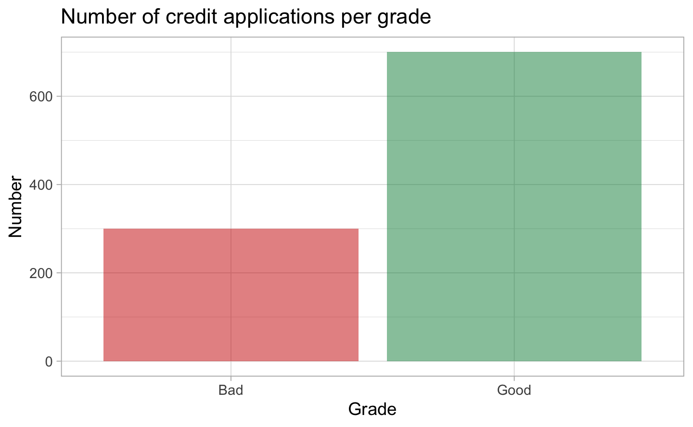
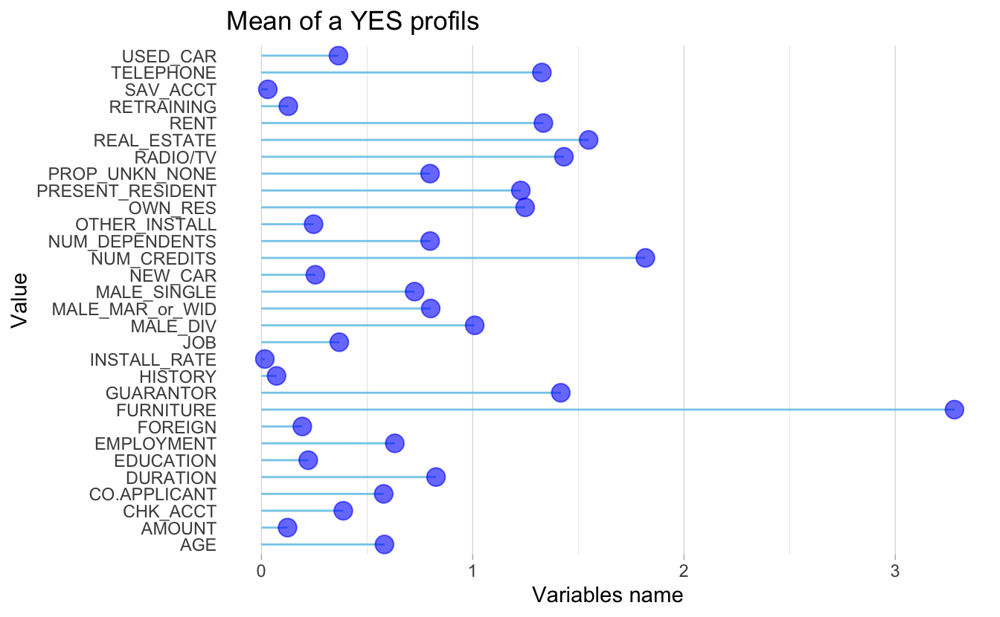
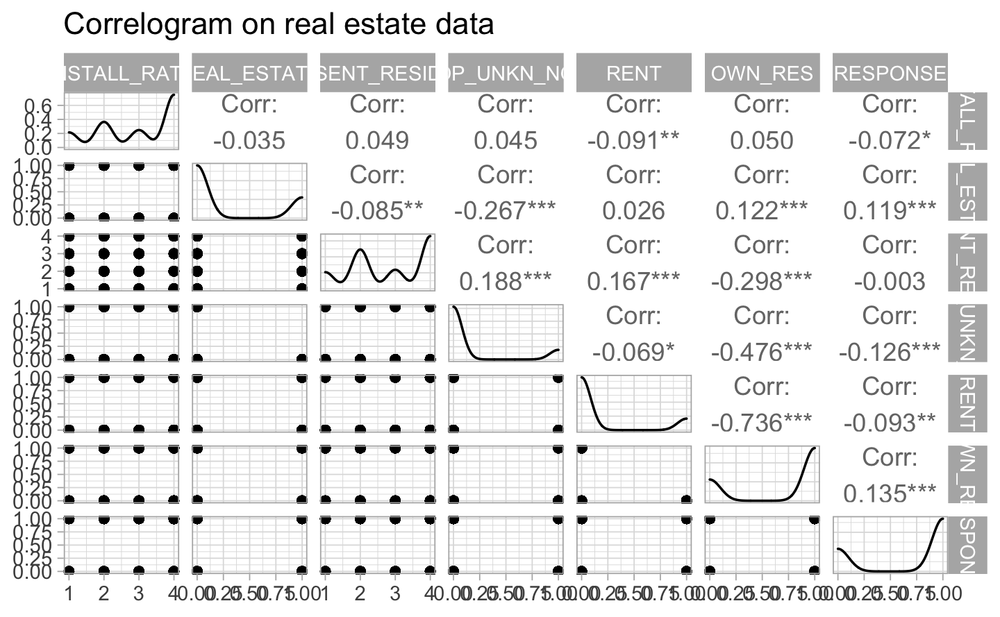
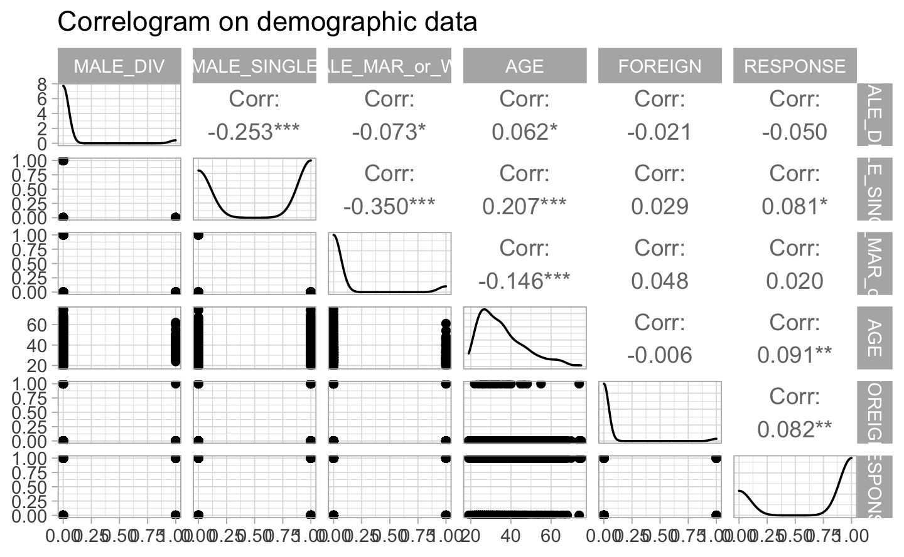
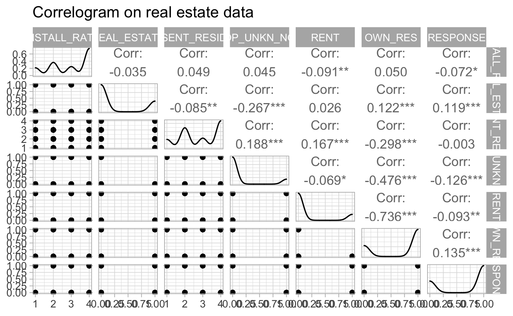
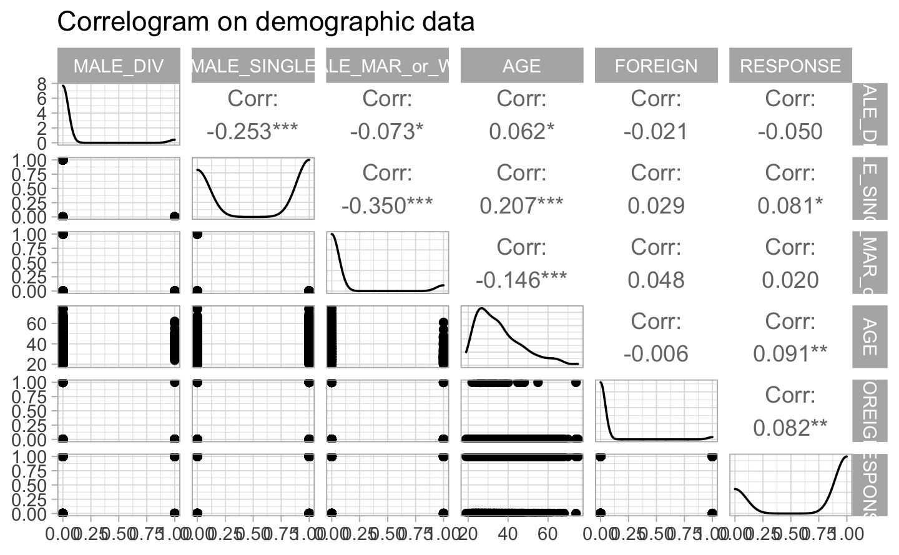
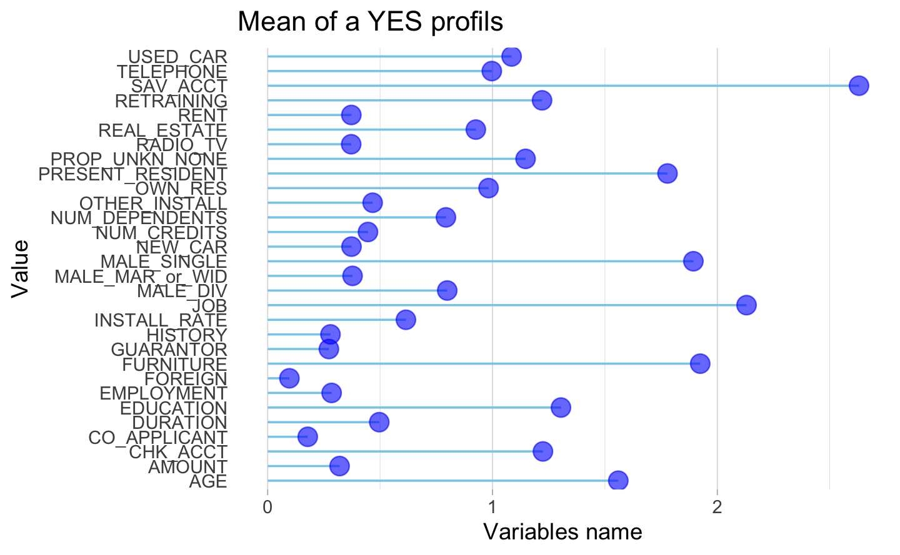
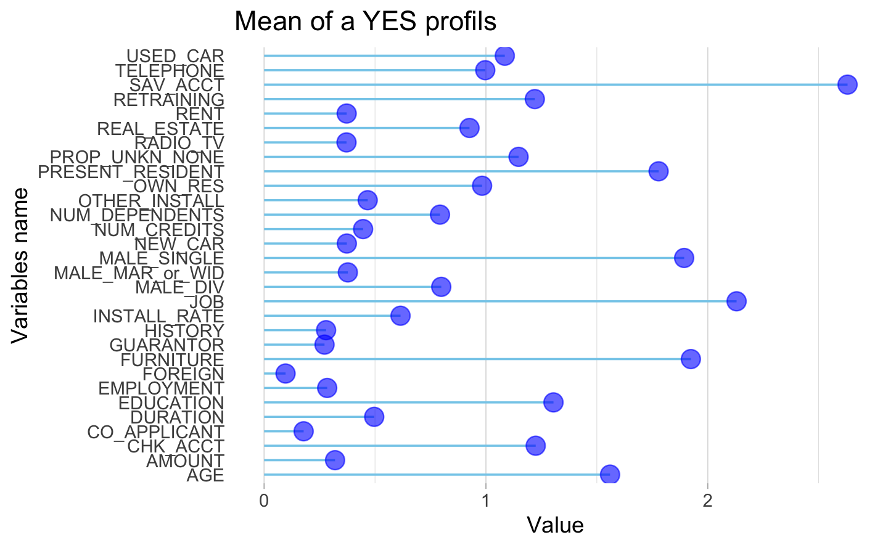

Chapter 2 Data understanding and preparation
2.1 Dataset
To create a model that will predict whether a client application represents a risk or not, we work on a dataset from our client containing data on 1000 past credit applications, described by the following variables:
CHK_ACCT: The checking account status of the applicant in Deutsche Mark (DM).
DURATION: The duration of the credit in months.
HISTORY: The credit history of the applicant.
NEW_CAR: Purpose of the credit.
USED_CAR: Purpose of the credit.
FURNITURE: Purpose of the credit.
RADIO/TV: Purpose of the credit.
EDUCATION: Purpose of the credit.
RETRAINING: Purpose of the credit.
AMOUNT: The credit amount.
SAV_ACCT: The average balance in savings account in Deutsche Mark (DM).
EMPLOYMENT: If the applicant is employed and since how long.
INSTALL_RATE: The installment rate as percentage of disposable income.
MALE_DIV: If the applicant is male and divorced.
MALE_SINGLE: If the applicant is male and single.
MALE_MAR_or_WID: If the applicant is male, married or widowed.
CO_APPLICANT: If the applicant has a co-applicant.
GUARANTOR: If the applicant has a guarantor.
PRESENT_RESIDENT: If the applicant is a resident and since how many years.
REAL_ESTATE: If the applicant owns real estate.
PROP-UNKN-NONE: If the applicant owns no property (or unknown).
AGE: Age of the applicant.
OTHER_INSTALL: If the applicant has other installment plan credit.
RENT: If the applicant rents.
OWN_RES: If the applicant owns residence.
NUM_CREDITS: Number of existing credits of the applicant at our client bank.
JOB: The nature of the applicant’s job.
NUM_DEPENDENT: Number of people for whom liable to provide maintenance.
TELEPHONE: If the applicant has a phone in his or her name.
FOREIGN: If the applicant is a foreign worker.
RESPONSE: If the credit application is rated as “Good” or “Bad”.
2.2 Exploratory Data Analysis
In this part, we thoroughly explore the dataset to get a better understanding.
2.2.1 Inacurracies
By doing an exploratory data analysis, we find some inaccuracies and in agreement with our client, we change them as follow:
- One observation of the variable “AGE”: 75 instead of 125 years old.
- One observation of the variable “EDUCATION”: 1 instead of -1.
- One observation of the variable “GUARANTOR”: 1 instead of 2.
2.2.2 Unbalanced observations
One interesting point is that the dataset is heavily unbalanced: 700 credit applications rated as good versus 300 credit applications rated as bad. We will need to balance the dataset for our modelling.

#> $`1`
#>
#> $`2`
#>
#> attr(,"class")
#> [1] "list" "ggarrange"
 


The following plot shows a selection of the most important variables of our dataframe. The two main disadvantages of these methods are: The increasing overfitting risk when the number of observations is insufficient. The significant computation time when the number of variables is large.
#> Warning in train.default(x, y, weights = w, ...): You are trying to
#> do regression and your outcome only has two possible values Are you
#> trying to do classification? If so, use a 2 level factor as your
#> outcome column.
#> Warning in nominalTrainWorkflow(x = x, y = y, wts = weights, info
#> = trainInfo, : There were missing values in resampled performance
#> measures.
#> rpart variable importance
#>
#> only 20 most important variables shown (out of 30)
#>
#> Overall
#> CHK_ACCT 0.1141
#> DURATION 0.0803
#> HISTORY 0.0767
#> SAV_ACCT 0.0684
#> AMOUNT 0.0516
#> REAL_ESTATE 0.0343
#> JOB 0.0000
#> MALE_MAR_or_WID 0.0000
#> PRESENT_RESIDENT 0.0000
#> TELEPHONE 0.0000
#> RETRAINING 0.0000
#> USED_CAR 0.0000
#> FURNITURE 0.0000
#> AGE 0.0000
#> OTHER_INSTALL 0.0000
#> GUARANTOR 0.0000
#> FOREIGN 0.0000
#> RADIO_TV 0.0000
#> OWN_RES 0.0000
#> NEW_CAR 0.0000